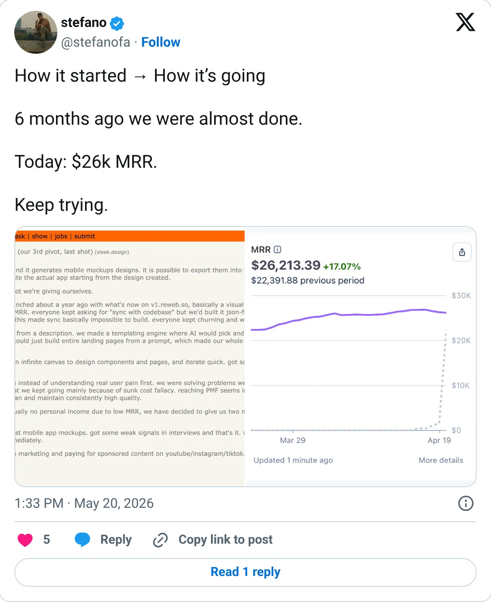
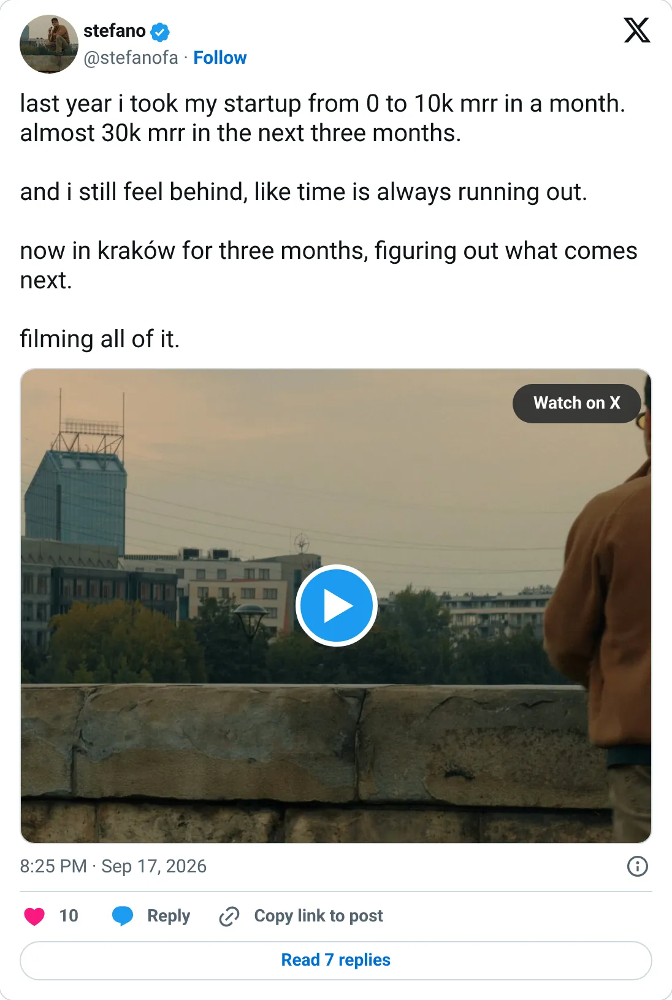

Not a pick
Sleek
The ledger looks real. It is not one of the clearer things to start next.
$21.3K MRR
Should you build this
The money looks real, and it is still not a recommendation to start a copy. Sleek's ranked figure is the TrustMRR MRR, $21.3K. The founder posted “today $26K MRR” in May 2026 and later described a path to almost $30K. The ledger did not follow the adjectives. About a 20–40% gap between the tweet and the processor is common when someone annualizes a good week or counts trials. Use $21.3K. The climb he describes is ahead of the billings.
Cited from the captured posts, shown below: the earliest captured post (May 20, 2026) is the source for “Founder: "Today $26K MRR"”; the latest milestone (Sep 17, 2026) is the source for “Founder: $0 to $10K MRR in a month, almost $30K in the next three”.
Posts this is based on

Founder: "Today $26K MRR"
Open on X

Founder: $0 to $10K MRR in a month, almost $30K in the next three
Open on X
What the product is
AI that turns an app idea into mobile app UI designs. Co-founded by Stefano (from Italy) with Mattia Pomelli and Niccolò Diana. It's listed in the US, with tracking since Mar 2026. TrustMRR shows 605 subscriptions.
Public trail
- $32.4KVerified revenue in Apr 2026 (first month tracked) source
- •Founder: "Today $26K MRR" source
- $27.9KVerified revenue in May 2026 source
- $24.4KVerified revenue in Jun 2026 source
- $25.2KVerified revenue in Jul 2026 source
- $24.9KVerified revenue in Aug 2026 source
- •Founder: $0 to $10K MRR in a month, almost $30K in the next three source
- $20.5KVerified revenue in Sep 2026 (latest full month) source